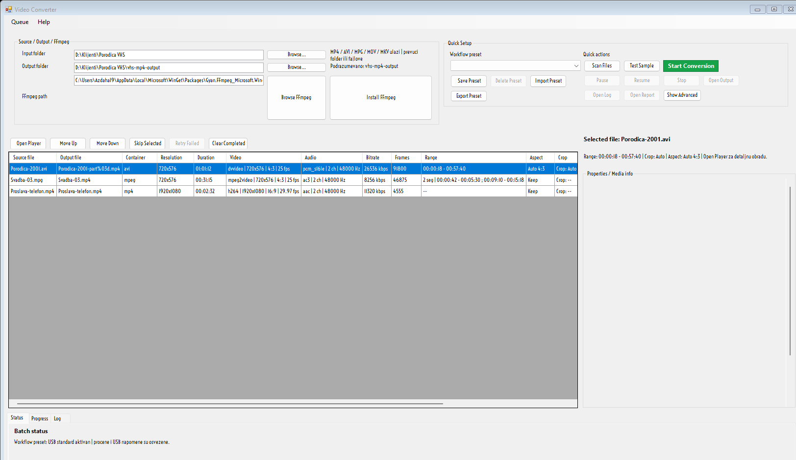
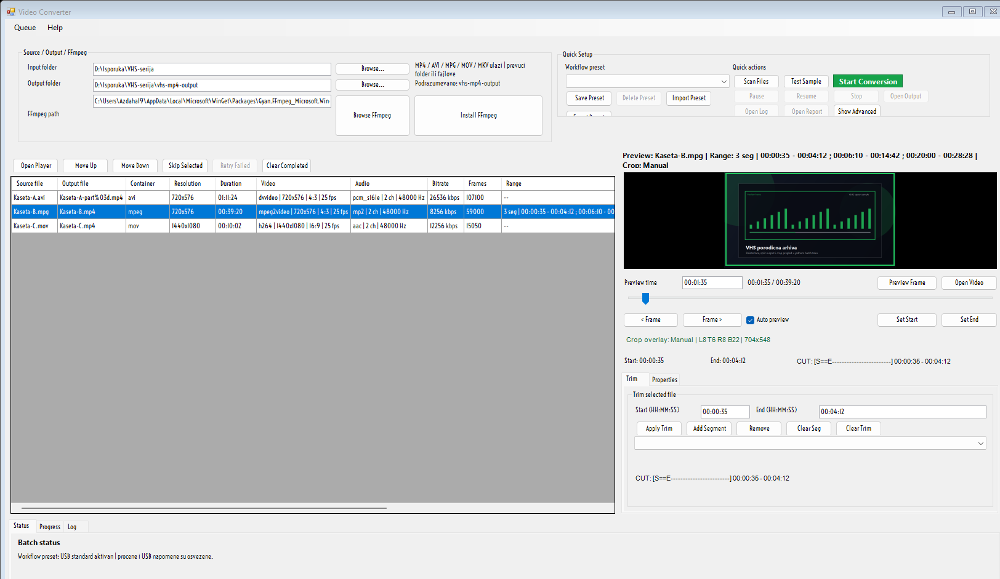
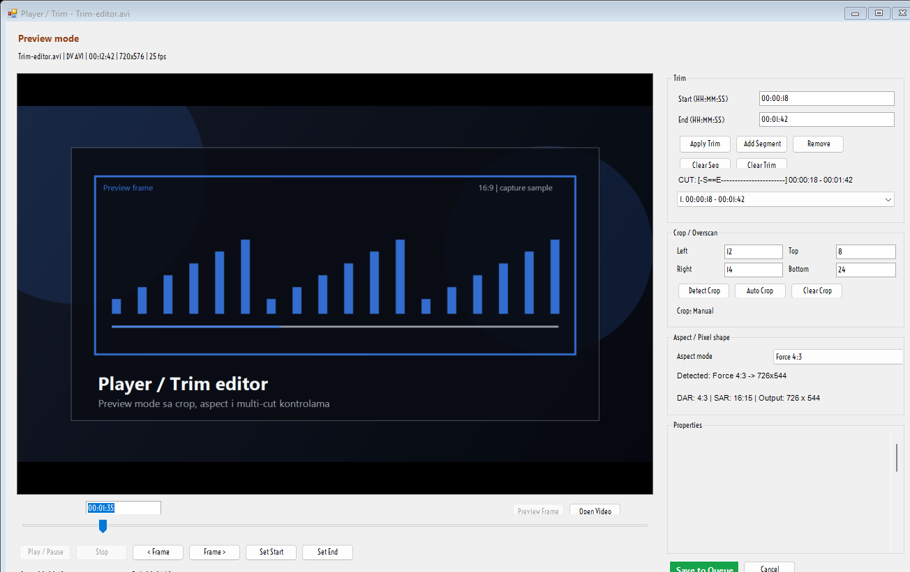

Video Converter / VHS MP4 Optimizer
Kako da brzo dodjes do gotovog MP4 fajla
Ovaj vodic je namerno praktican: gde se klikce, sta je najvaznije i kako da procenis izlaz pre nego sto pustis batch. Originalni fajlovi se ne menjaju.
Brzi start
- Pokreni
VHS MP4 Optimizer. - U gornjoj liniji izaberi Input folder i Output folder.
- Po potrebi izaberi Workflow preset ili brzo podesi Quality mode.
- Klikni Scan Files da ucitas batch.
- Po potrebi otvori Open Player za preview, trim, crop i aspect korekciju.
- Klikni Start Conversion.
Glavni prozor

Input i Output
U prvoj liniji zadas gde su originali i gde treba da idu gotovi MP4 fajlovi. Ako program moze, sam ce pripremiti FFmpeg u pozadini.
Output tabela
Posle Scan Files vidis svaki fajl, osnovne tehnicke podatke, procenu izlaza i USB napomenu.
Workflow preset
Workflow preset cuva opsta batch podesavanja. Ako posle rucno promenis neko polje, stanje prelazi u Custom.
Gotovi preset-i
- USB standard za najprakticniju predaju.
- Mali fajl kada juris sto manju velicinu.
- High quality arhiva kada je kvalitet bitniji od velicine.
- HEVC manji fajl za novije uredjaje i manji fajl.
- VHS cleanup za tipican VHS materijal.
Sta preset pamti
Quality mode, CRF, preset, video bitrate, audio bitrate, deinterlace, denoise, rotate/flip, scale, audio normalize, encode engine, split output i max part GB.
Advanced Settings

Video filters
Deinterlace, Denoise, Rotate/flip, Scale i Audio normalize rade globalno za batch.
Encode engine
Encode engine nudi Auto, CPU (libx264/libx265), NVIDIA NVENC, Intel QSV i AMD AMF.
Player / Trim

Trim i segmenti
Set Start, Set End, Apply Trim, Add Segment i Clear Trim rade precizan trim bez izlaska iz editora.
Crop i aspect
Detect Crop, Auto Crop, Aspect mode, DAR, SAR i planirani izlaz pomazu da stari VHS i DV materijal izgleda pravilno.
Queue alati
| Alat | Cemu sluzi |
|---|---|
| Pause / Resume | Zavrsi trenutni fajl pa stani, zatim nastavi od sledeceg queued reda. |
| Move Up / Move Down | Preslaguje red cekanja bez ponovnog skeniranja foldera. |
| Skip Selected | Preskace jednu stavku u ovoj rundi. |
| Retry Failed | Vraca neuspele stavke nazad u queue. |
| Save Queue / Load Queue | Cuva i vraca batch plan sa trim, crop i aspect stanjem. |
USB predaja
Praktican savet: ako ce fajlovi ici na USB koji mora da cita i stariji uredjaj, prati Estimate i USB note. Kada je rizik da fajl predje 4 GB, ukljuci Split output i ostavi 3.8 GB.
Help / About / Update
About
Pokazuje trenutnu verziju, release tag, git ref, tip instalacije i putanju sa koje je aplikacija pokrenuta.
Open User Guide
Otvara upravo ovaj HTML vodic. Ako HTML nije dostupan, aplikacija i dalje ima txt/md fallback.